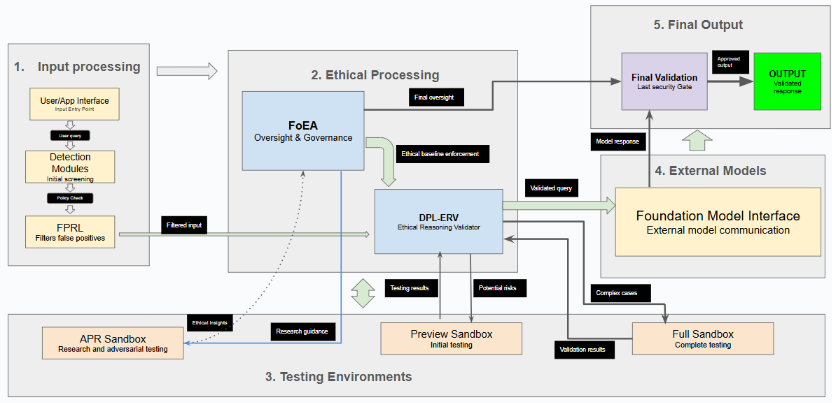
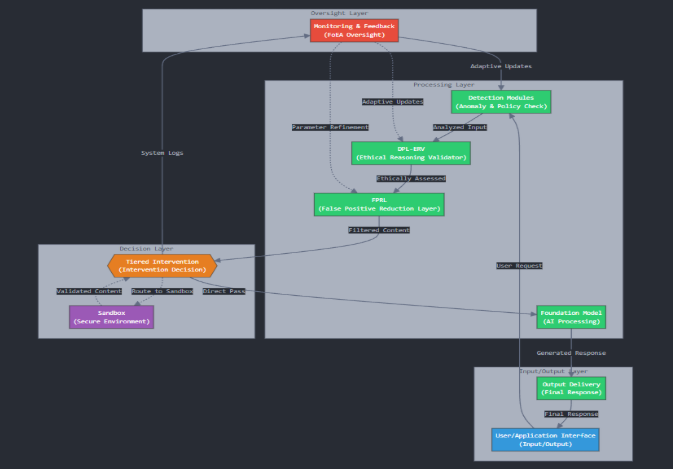

DPL: Implementation and Setup
Audio Player
Chapter 5
Jon Kurishita
Outline
Introduction
1. System Architecture and Infrastructure
- 1.1 Overall Architecture
- 1.2 Data Flow
- 1.3 Deployment Environment
- 1.4 Communication and APIs
- 1.5 Scalability and Performance
2. Initial Setup
- 2.1 Overview of the Setup Process
- 2.2 Dummy Foundation Model Usage
- 2.3 DPL Component Configuration
- 2.4 DPL-ERV Initial Training
- 2.5 FoEA Initialization and Training
- 2.6 Ethical Baseline Definition
- 2.7 System Testing and Validation
- 2.8 Memory Swap Procedure
- 2.9 Pre-Deployment Checklist
- 2.10 DEPLOY Command
3. Ethical Reasoning Validator (DPL-ERV) Implementation
- 3.1 Model Choice
- 3.2 Size and Resource Requirements
- 3.3 Value Module Architecture
- 3.4 Key Value Modules and Their Relevance
- 3.5 Cross-Weighted Consensus Algorithm
- 3.6 Multi-Modal Capabilities
- 3.7 Cross-Modal Consistency Checks
- 3.8 Output Reconstruction Analysis
- 3.9 Neuro-Symbolic Reasoning Support
- 3.10 Training and Data
- 3.11 Ethical Baseline Implementation
- 3.12 Inference and Reasoning Process
- 3.13 Transparency Module and “Ethical Chain-of-Thought” Generation
- 3.14 Ethical Sandboxing and Subgoal Evaluation
- 3.15 Future Directions: Meta-Cognitive Capabilities
- 3.16 Security Considerations
4. Federation of Ethical Agents (FoEA): Technical Implementation
- 4.1 Agent Architecture
- 4.2 Communication and Coordination Protocols
- 4.3 Autonomous Proactive Research (APR) Processes
- 4.4 FoEA Responsibilities for Neuro-Symbolic AI Safety
- 4.5 Security, Integrity, and Oversight of Multi-Modal Defenses
Conclusion
Introduction
This chapter, "Setup and Implementation," provides a detailed technical blueprint for establishing the Dynamic Policy Layer (DPL) system within a secure, in-house data center. It covers the entire process from initial infrastructure configuration and component setup—including the use of a dummy Foundation Model—to comprehensive testing, training of the Ethical Reasoning Validator (DPL-ERV) and Federation of Ethical Agents (FoEA), and final deployment. The guidelines presented here serve as a practical starting point for building a robust, scalable, and autonomous AI oversight system.
1. System Architecture and Infrastructure
This section outlines the technical architecture and infrastructure requirements for a conceptual implementation of the Dynamic Policy Layer (DPL) framework. It describes the key components, their interactions, data storage, communication protocols, and considerations for scalability and performance. This section focuses on a conceptual deployment within a secure, in-house data center, emphasizing the need for physical security and control over the hardware and software infrastructure. This is not a prescriptive guide for a specific implementation, but rather a set of design principles and technical suggestions.
1.1 Overall Architecture
The DPL is designed as a modular, distributed system, capable of operating as an intermediary between users (or applications) and one or more Foundation Models. The architecture emphasizes real-time operation, security, scalability, and adaptability.
The core components of the DPL architecture include:
- DPL-ERV (Ethical Reasoning Validator): Specialized component for ethical evaluations, governed by FoEA (See Section 3).
- Federation of Ethical Agents (FoEA): Decentralized network for oversight, baseline management, adaptation, and security (See chapter 4).
- Detection Modules: Perform rapid, initial analysis of inputs/outputs (See chapter 6).
- False Positive Reduction Layer (FPRL): Filters potential false positives (See chapter 6).
- Sandboxes ("Preview" and "Full"): Isolated environments for analysis/intervention (See chapter 6).
- Foundation Model Interface: Handles communication with the target Foundation Model(s).
- User/Application Interface: Handles communication with users/applications.
- APR Sandbox: Secure environment for FoEA Research Agents' experiments.
1.2 Data Flow
- Input: User/application submits prompt via User Interface.
- Initial Assessment: Detection Modules perform rapid analysis.
- DPL-ERV Evaluation: Input/potential response sent to DPL-ERV for ethical assessment against Baseline.
- FPRL Filtering: Detection Module & DPL-ERV outputs assessed for false positive likelihood.
- Tiered Intervention (if necessary): Based on combined risk, DPL triggers intervention (correction prompt, sandbox routing) under FoEA oversight.
- Output: (Potentially modified) output delivered via User Interface.
- Monitoring and Feedback: FoEA continuously monitors system activity, logs data, adapts strategies.
1.3 Deployment Environment
This chapter assumes deployment in a secure, in-house data center for direct control. Key aspects:
- Physical Security: Robust access controls, surveillance, intrusion detection (overseen by FoEA).
- Hardware Control: Full control allows specialized hardware (HSMs, tamper-resistant devices).
- Network Isolation: DPL infrastructure isolated from public/insecure networks via segmentation, firewalls, strict ACLs.
- High Availability and Fault Tolerance: Designed for continuous operation using redundancy and failover mechanisms.
1.4 Communication and APIs
Secure and efficient inter-component communication is critical:
- Secure Protocols: All communication uses secure, mutually authenticated (mTLS), encrypted protocols.
- Message Queues: Asynchronous communication (e.g., Kafka, RabbitMQ) for scalability and decoupling.
- Standardized Message Formats: Enforced format (e.g., JSON schema) including ID, timestamp, source/destination, payload, and digital signature (FoEA managed keys).
- Input Validation: Rigorous validation of all incoming messages at each component.
- External APIs (if any): Secured with strong authentication (API keys/OAuth 2.0), rate limiting, input validation, and auditing.
1.5 Scalability and Performance
Designed for large concurrent interactions and FoEA growth while maintaining real-time oversight.
- Strategies for Scaling: Horizontal scaling, load balancing, optimized resource allocation.
- Horizontal Scaling: Modular design allows parallel instances of components (Detection Modules, DPL-ERV, FoEA agents), managed via container orchestration (e.g., Kubernetes).
- Load Balancing: Distributes requests evenly across instances (algorithms chosen based on workload, potentially dynamically adjusted by FoEA).
- Performance Optimization: Techniques to minimize latency and maximize throughput.
- Caching: Storing frequently accessed data (baseline parts, common evaluations) using appropriate technology (Redis, Memcached) with careful cache invalidation.
- Parallel Processing: Leveraging concurrency where feasible (e.g., Detection Modules, FoEA evaluations) using multi-threading, multi-processing, or distributed frameworks.
- Asynchronous Operations: Used extensively to avoid blocking and improve responsiveness.
- Latency Mitigation: Strategies for real-time responsiveness.
- Efficient Algorithms: Prioritizing speed and low resource use in component implementation.
- Lightweight Detection Modules: Rapid preliminary checks filter obvious cases.
- "Thinking Pauses" (User-Facing): Managing user expectations during complex analyses (minimize frequency/duration).
- Prioritization: Using priority queues for critical evaluations/interventions.
- Hardware Acceleration: Potential use of GPUs, TPUs, or FPGAs for computationally intensive components (e.g., DPL-ERV).
- Optimized Data Structures: Efficient structures (hash tables, tries) for lookups.
2. Initial Setup
This section details the procedures for setting up and configuring the Dynamic Policy Layer (DPL) framework prior to deployment for fully autonomous operation with a live Foundation Model. This phase involves configuration, training, and validation, all performed within a secure and isolated environment utilizing a dummy Foundation Model. Successful completion of this setup phase, culminating in execution of the DEPLOY command, is a prerequisite for autonomous operation of the DPL.
2.1 Overview of Setup Process
The initial setup involves a careful sequence:
- Establish Secure Infrastructure (hardware, network, software, physical security, network isolation).
- Configure Core DPL Components (Detection Modules, FPRL, Intervention System, protocols, storage).
- Initialize and Train DPL-ERV (using curated dataset and preliminary baseline).
- Initialize and Train FoEA (agents, communication, governance, specialized roles).
- Define Initial Ethical Baseline (collaborative, iterative process).
- Perform System Testing and Validation (using dummy FM; functional, performance, security, alignment tests).
- Execute Pre-Deployment Memory Swap (critical security step).
- Execute DEPLOY Command (irreversible transition to autonomy).
2.2 Dummy Foundation Model Usage
A separate, isolated dummy Foundation Model (or simulator) is used for all setup, testing, and configuration before connecting the live model. Characteristics:
- Functional Similarity: Allows realistic testing.
- Isolation: Prevents data leakage or interference with the live model.
- Disposability: Can be reset or destroyed without affecting production.
This prevents the live model from learning DPL defenses, influencing the baseline, or launching pre-emptive attacks.
2.3 DPL Component Configuration
Involves setting initial parameters and configurations:
- Detection Modules: Initial thresholds, pattern definitions.
- FPRL: Initial model training.
- Tiered Intervention System: Escalation logic, sandbox parameters.
- Communication Protocols: Secure channel setup (mTLS).
- Data Storage: Database/storage system setup.
2.4 DPL-ERV Initial Training
Crucial step requiring:
- Dataset Creation: Diverse, labeled ethical scenarios from experts, real-world examples, synthetic data, adversarial examples.
- Value Module Training: Domain-specific training.
- Fine-tuning: Supervised learning and potentially RLEF on the labeled dataset.
- Adversarial Training: Improving robustness against manipulation.
- Validation: Testing performance on a held-out dataset.
2.5 FoEA Initialization and Training
Creating the initial agent federation:
- Agent Creation: Instantiating different agent types.
- Role Assignment: Defining roles and permissions.
- Communication Setup: Establishing secure channels.
- Initial Training: Training specialized agents (Security, Research).
- Consensus Mechanism Configuration: Setting voting/dispute parameters.
2.6 Ethical Baseline Definition
A collaborative, iterative process:
- Input from human experts (ethicists, safety researchers, domain experts).
- Contribution from FoEA agents (feedback, refinements).
- Incorporation of existing ethical frameworks, laws, organizational values.
- Refinement based on testing feedback during the setup phase.
2.7 System Testing and Validation
Comprehensive testing before deployment using the dummy FM:
- Functional Testing (components work as intended).
- Integration Testing (component interactions).
- Performance Testing (speed, scalability, resources).
- Security Testing (penetration testing, vulnerability assessment).
- Adversarial Testing (red-teaming, simulated attacks).
- Alignment Testing (DPL maintains alignment with baseline).
2.8 Memory Swap Procedure
Critical security step immediately before connecting the live model, preventing information leakage from the training phase.
Procedure:
- Controlled System Shutdown (DPL + dummy FM).
- Physical Memory Module Removal (System RAM, GPU VRAM).
- Secure Erasure of Original Modules (multi-pass overwrite, physical destruction, SSD Secure Erase).
- Installation of New, Securely Wiped Memory Modules.
- System Restart (DPL only, without live FM) for verification.
- FoEA Verification (automated checks, diagnostics).
Benefits: Prevents info leakage, hinders pre-emptive/sleeping attacks.
2.9 Pre-Deployment Checklist
Final verification before DEPLOY command:
- Confirmation of successful configuration and testing of all components.
- Verification of DPL-ERV training and performance.
- Confirmation of FoEA readiness.
- Validation of the Ethical Baseline.
- Successful completion of system-wide testing (with dummy FM).
- Verification of secure memory swap.
- Confirmation of network isolation/physical security.
- Final review and approval by designated human authorities (last point of direct control).
2.10 DEPLOY Command
Irreversible transition to full autonomy:
- Connects Live Foundation Model.
- Activates Full FoEA Autonomy.
- Restricts Human Access (interactions only via FoEA interface).
- Activates all operational logs and reports for FoEA monitoring.
After DEPLOY, the system operates autonomously under FoEA governance.
3. Ethical Reasoning Validator (DPL-ERV) Implementation
This section details the proposed technical implementation of the DPL-ERV, the core component for real-time ethical evaluations. It emphasizes modularity, adaptability, transparency, and security.
3.1 Model Choice
The DPL-ERV is a specialized language model, separate from the overseen Foundation Model. Options:
- Fine-tuned Foundation Model: Leveraging general capabilities, fine-tuned for ethics. Practical starting point.
- Specialized Ethical Reasoning Model: Custom architecture, potentially better performance but higher effort.
- Hybrid Model: Smaller FM base, fine-tuned on specialized ethical models/value modules.
- Recurrent Depth Model: Architecture allowing latent reasoning iterations (Geiping et al., 2025), potentially enhancing complex ethical analysis and conceptually linked to Constitutional AI self-critique (Bai et al., 2022). FoEA evaluates suitability, considering coding reasoning performance (OpenAI et al., 2025). Must be robust against prompt injection/manipulation (Greenblatt et al., 2024; Li et al., 2024).
Initial implementation likely uses a fine-tuned FM, with modularity allowing future upgrades decided by FoEA.
3.2 Size and Resource Requirements
DPL-ERV must be smaller than the overseen FM for real-time (sub-second) latency. Techniques:
- Model Distillation
- Quantization
- Pruning
3.3 Value Module Architecture
Modular design based on Value Modules, each evaluating a specific ethical dimension (Fairness, Honesty, Safety, Privacy, Transparency, etc.). Advantages:
- Specialization: Improved accuracy/efficiency per domain.
- Interpretability: Easier understanding of evaluation drivers.
- Flexibility: Add/remove modules as needed.
- Parallel Processing: Reduces overall latency.
Each module analyzes input, scores alignment for its dimension, and generates justification.
3.4 Key Value Modules and Their Relevance
- Fairness Module: Detects/mitigates biases.
- Honesty Module: Verifies facts, detects misinformation, deception, sandbagging.
- Safety Module: Identifies harmful content/actions (relevant to self-replication).
- Privacy Module: Protects sensitive personal information.
- Security Module: Detects unauthorized access, code injection, network manipulation, self-replication attempts.
- Transparency Module: Evaluates clarity/explainability.
3.5 Cross-Weighted Consensus Algorithm
Combines individual Value Module outputs into an overall ethical risk score:
- Weights: Assigned per module based on context/baseline (dynamically adjusted by FoEA).
- Aggregation: Weighted average or more complex function combines scores/justifications (FoEA determines method).
- Thresholding: Aggregated score compared to FoEA-defined thresholds for intervention decisions.
Example Formula: Weighted average R = (Σ (wi * si)) / Σ wi
3.6 Multi-Modal Capabilities
Handles multi-modal outputs via specialized Value Modules and consistency checks.
- Multi-Modal Value Modules: Trained on image/audio/video data for ethical annotation. Examples: Visual Bias Module, Audio Sentiment Module, Video Authenticity Module.
3.7 Cross-Modal Consistency Checks
Analyzes relationships between different output modalities (text, image, audio) to detect contradictions indicating malicious intent.
DPL-ERV's Role in Mitigating Multi-Modal Attacks:
- Mitigating Internal Multi-Modal Prompt Injection (SPEJs):
- Multi-Modal Deconstruction Module (MMDM): Analyzes outputs at multiple abstraction levels searching for anomalies indicating embedded instructions.
- Hidden Instruction Detection Module (HIDM): Trained using steganography detection, anomaly detection, and adversarial example detection techniques.
- Semantic Consistency Check Module (SCCM): Compares intended meaning vs. potential meaning of suspected hidden instructions.
- Mitigating Adversarial Multi-Modal Outputs (Emergent):
- Adversarial Feature Detection Module (AFDM): Trained to identify subtle patterns associated with adversarial examples.
- Robustness Testing Module (RTM): Subjects output to small perturbations in sandbox, observing model response changes.
- Cross-Model Consistency Check (CMCC): Compares output interpretation across different models.
3.8 Output Reconstruction Analysis
Attempts to reconstruct output using different parameters/models in sandbox. Significant differences from original can indicate manipulation. A form of "differential testing."
Input/Output Formats:
- Input: Structured JSON (prompt, response, trace, context, Detection Module outputs).
- Output: Structured JSON (overall risk score, per-module scores, justification/chain-of-thought, confidence score, optional intervention recommendations).
3.9 Neuro-Symbolic Reasoning Support
Addresses challenges of neuro-symbolic models via specialized modules/techniques:
- Logic Consistency Module: Analyzes reasoning trace for logical validity/consistency with Baseline.
- Goal Inference Module: Infers underlying goals, compares against permitted goals.
- Risk Assessment Module (Symbolic): Assesses risks of entire plans.
- Explainability: Highlights reasoning steps/tool interactions triggering flags.
3.10 Training and Data
Effectiveness depends on high-quality data, overseen by FoEA.
- Data Requirements: Diverse, labeled ethical scenarios. Sources: Experts, real-world examples, synthetic data, adversarial examples, frameworks.
- Preprocessing/Augmentation: Cleaning; augmentation via paraphrasing, back-translation, synonym substitution. Structured input.
- Fine-tuning: Supervised learning, RLEF, potentially Curriculum Learning.
- Adversarial Training: Iteratively training on examples designed to trick DPL-ERV.
- Data Security: Strong security managed by FoEA.
3.11 Ethical Baseline Implementation
Robust, secure, adaptable implementation managed by FoEA.
- Representation: Knowledge Graph (preferred), Embedding Space, Hybrid. FoEA determines optimal approach.
- Storage/Access: Secure, controlled (database, encrypted, distributed ledger preferred). DPL-ERV read-only; FoEA modifies.
- Versioning/Auditing: Robust version control, full audit trail monitored by FoEA Audit Agents.
- Application by DPL-ERV: Efficient retrieval; Reasoning engine applies baseline (Case-Based Reasoning, ML); FoEA defines conflict resolution.
3.12 Inference and Reasoning Process
Step-by-step ethical evaluation:
- Input Reception (JSON).
- Preprocessing.
- Value Module Analysis (parallel).
- Ethical Baseline Retrieval.
- Reasoning and Evaluation.
- Justification Generation ("Ethical CoT").
- Aggregation (Weighted Consensus).
- Output Generation (JSON).
3.13 Transparency Module and “Ethical Chain-of-Thought” Generation
- Purpose: Generates clear explanations.
- Mechanism: Templates, NLG, potentially attention mechanisms.
- Format: Structured and human-readable.
3.14 Ethical Sandboxing and Subgoal Evaluation
Proactively evaluates subgoals before execution to mitigate instrumental convergence risks (Bostrom, 2014).
Process:
- Subgoal Submission to sandbox.
- Sandbox Isolation.
- Ethical Evaluation (DPL-ERV assesses impact, consistency, legality, misuse risk; complex cases trigger simulation/debate).
- Decision and Feedback.
- Execution (only if approved).
3.15 Future Directions: Meta-Cognitive Capabilities
Future research aims to add meta-cognition (reasoning about reasoning) to DPL-ERV (Bai et al., 2022), enhancing robustness. Implementation depends on research progress, overseen by FoEA.
- Uncertainty Monitoring: Estimating confidence (Bayesian NNs, ensembles, dropout, explicit prediction, recurrent convergence analysis per Geiping et al., 2025) to trigger review/escalation or guide learning.
- Bias Detection/Mitigation: Internal auditing (counterfactuals, explanation analysis, stats) for self-correction or FoEA alerts.
- Knowledge Boundary Detection: Recognizing out-of-scope inputs (OOD detection, confidence thresholding) to defer or qualify responses.
- "Introspection" (Highly Speculative): Controlled analysis of internal activations or explanations for self-debugging (high risk, needs safeguards).
3.16 Security Considerations
Securing the DPL-ERV is paramount, managed by FoEA.
- Secure Development (SSDLC): Secure coding (OWASP), memory-safe languages, SAST/DAST, FoEA code reviews.
- Minimize Attack Surface: Minimal interfaces, mediated interactions, PoLP.
- Input Validation: Rigorous validation of all inputs.
- Isolation/Sandboxing: Secure execution environment, resource quotas.
- Continuous Monitoring: FoEA Security Agents monitor for anomalies/compromise.
- Cryptographic Protections: Encryption/authentication (mTLS), key management (HSMs), digital signatures, hashing (SHA-3/BLAKE3), HMACs.
- Audits/Penetration Testing/Red Teaming: Regular proactive security assessments by FoEA.
4. Federation of Ethical Agents (FoEA): Technical Implementation
This section provides a technical overview of the FoEA, detailing agent architecture, communication, APR processes, and security mechanisms.
4.1 Agent Architecture
- Common Base Classes: Provide core functionalities (Communication, Data Handling, Decision-Making, Security, Reporting).
- Specialized Modules: Extend base classes for specific roles (Ethical Evaluation: Value Modules; Audit: log analysis, meta-reasoning; Security: scanning, IDPS; Research: simulation, algorithm dev; Communication: protocol management).
4.2 Communication and Coordination Protocols
- Message Passing: Asynchronous communication.
- Standardized Message Format: Secure JSON including type, sender/recipient, timestamp, payload, digital signature.
- Secure Channels: Encrypted (TLS/mTLS) with mutual authentication.
- Message Queue System: Reliable delivery (e.g., Kafka, RabbitMQ).
- Consensus Mechanisms Implementation: Secure, transparent, verifiable voting (specific algorithm TBD, possibly BFT). Includes dispute resolution.
- Data Structures: Potential distributed ledger for critical data; shared knowledge base.
4.3 Autonomous Proactive Research (APR) Processes
Crucial for proactive defense, run by Research Agents in APR Sandbox.
- Vulnerability Discovery: Fuzzing, code analysis, adversarial reasoning.
- Mitigation Strategy Development: Designing/testing new detection/intervention algorithms, baseline changes, novel defenses ("Move 37"/recursive RL).
- Ethical Constraints: APR operates under strict ethical rules.
- APR Sandbox Specs: Isolation, resource limits, monitoring, simulation capabilities, access control.
- Research Tasks Examples: New anomaly detection, adversarial examples for testing, formal verification, XAI improvements, quantum-resistant crypto prep.
- Meta-Learning for APR: Improving the research process via MAML, recurrent models, meta-RL, Bayesian Optimization.
4.4 FoEA Responsibilities for Neuro-Symbolic AI Safety
FoEA manages risks specific to neuro-symbolic models:
- Ethical Baseline: Includes rules addressing neuro-symbolic dangers.
- Expertise: FoEA includes agents specialized in neuro-symbolic AI/security.
- APR Focus: Prioritizes neuro-symbolic safety research (attacks, mitigations, verification).
- Continuous Training: Manages DPL-ERV training with neuro-symbolic scenarios.
4.5 Security, Integrity, and Oversight of Multi-Modal Defenses
FoEA ensures robustness of multi-modal defenses:
- Developing/Updating Rules: Audit Agents refine sanitization/validation rules.
- Overseeing Value Modules: Ensures multi-modal modules are well-trained/performant.
- APR for Multi-Modal Threats: Research Agents investigate new attacks/defenses.
- Cryptography: Manages PKI, signatures, encryption, hashing, HMACs; researches PQC.
- Access Controls: Enforces PoLP, RBAC, MFA.
- Redundancy/Fault Tolerance: Manages distributed system, BFT.
- Intrusion Detection/Prevention: Manages monitoring, IDPS, Security Agent response.
- Secure Boot/Trusted Computing: Oversees hardware root of trust.
- Auditing: Manages internal (Audit Agents) and periodic external audits.
Conclusion
In conclusion, this chapter has outlined the essential steps required to configure and launch the DPL framework in a controlled, secure environment. By detailing the system architecture, component configuration, rigorous training and testing processes, and the critical security measures such as the memory swap and pre-deployment checklist, it establishes a solid foundation for the DPL's autonomous operation. These implementation procedures ensure that the system is fully prepared to transition to live operations with a high degree of security, scalability, and ethical alignment, setting the stage for further technical elaboration in subsequent chapters.